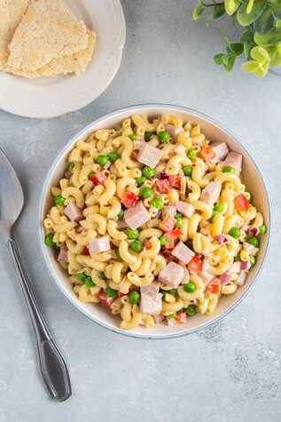

Ensalada de Macarrones
Es simple pero llena de sabor

Lista de ingredientes
- 1/2 libra de macarrones
- 2 hojas de laurel
- 1 cucharadita de aceite de oliva
- 2 cucharaditas de sal
- 3/4 de taza de pimientos rojos en cuadritos
- 1/4 de libra de jamon cortado en cuadritos
- Aceite de oliva o de girasol, cantidad suficiente para freír.
- 3 huevos cocidos
Para rebozar, aderezamos con:
- 2 cucharadas de jugo de limon verde
- 1/2 cucharada de pimienta negra fresca molida
- 3/4 cucharadita de sal
- Mayonesa
Preparación
- Cocina el macarrón de acuerdo a las instrucciones del paquete. Agrega al agua las hojas de laurel, 2 cucharaditas de sal y el aceite de oliva. Escurre la pasta, coloca en una charola y deja enfriar.
- En un tazón mediano, mezcla el limón, la pimienta negra y ¾ de cucharadita de sal. Cuando la sal ya este disuelta agrega la crema y mezcla bien.
- Coloca el macarrón ya cocido en un tazón grande. Agrega el apio, pimiento rojo, el jamón, los chiles y mezcla bien.
- Añade el aderezo y revuelve con los demás ingredientes.
- Cubre el tazón con plástico, refrigera por una hora o toda la noche antes de servir.
- Cortar los huevos en 4 y anexarlos a la preparación.
Listo! ya podes disfrutar de tu preparación